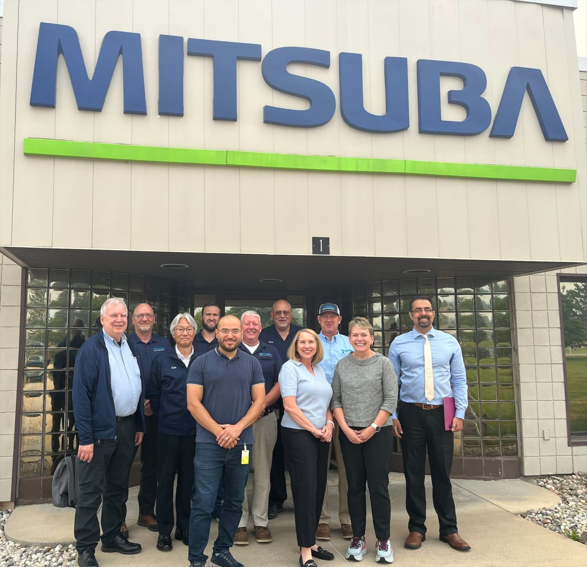
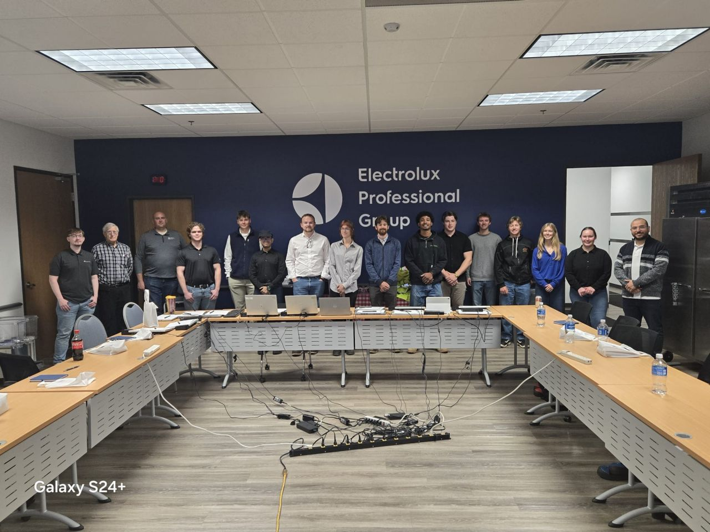
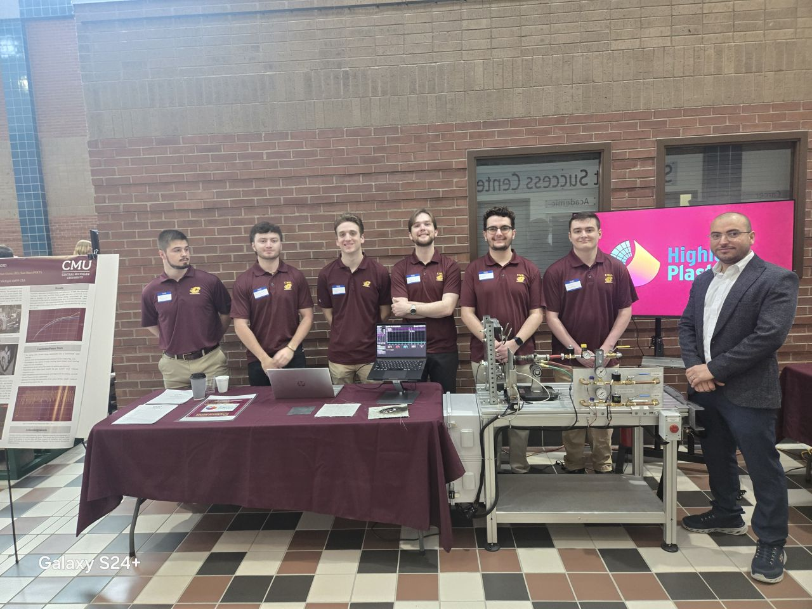
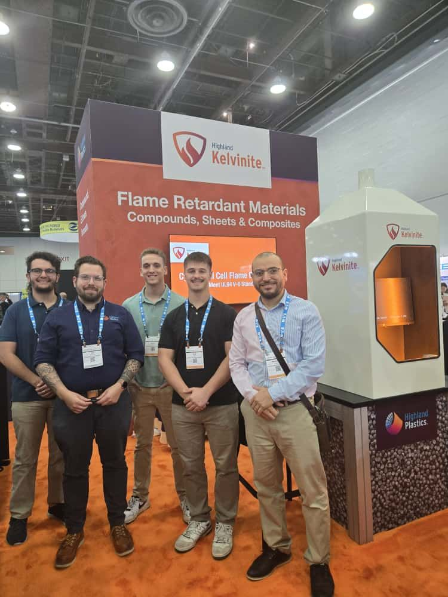

Directing multidisciplinary student engineering teams in tackling high-stakes industry challenges.
As Senior Design Manager & Industry Liaison in CMU's School of Engineering & Technology, I lead the department's capstone program—managing corporate sponsor acquisition, structuring project scopes and formal Statements of Work (SOWs), and coordinating multidisciplinary student teams across Mechanical, Electrical, Computer, and Environmental Engineering.
Under my management, the program secured a record-breaking 16 industry-sponsored Senior Design projects and generated $60,000 in dedicated program funding. I oversee the full lifecycle from early concept generation and feasibility analysis to physical prototyping, rigorous bench testing, and executive sponsor presentations.
Corporate Industry Engagements


Prototyping & Technical Expos


Entrepreneurship & Operations Background
Founder & Operations Manager, Cad Cam Technology Company, Egypt (2016–2019). Owned and operated a manufacturing facility, directing production, quality control, budgeting, workforce scheduling, safety protocols, and regulatory compliance—providing first-hand operational perspective that informs my engineering management today.